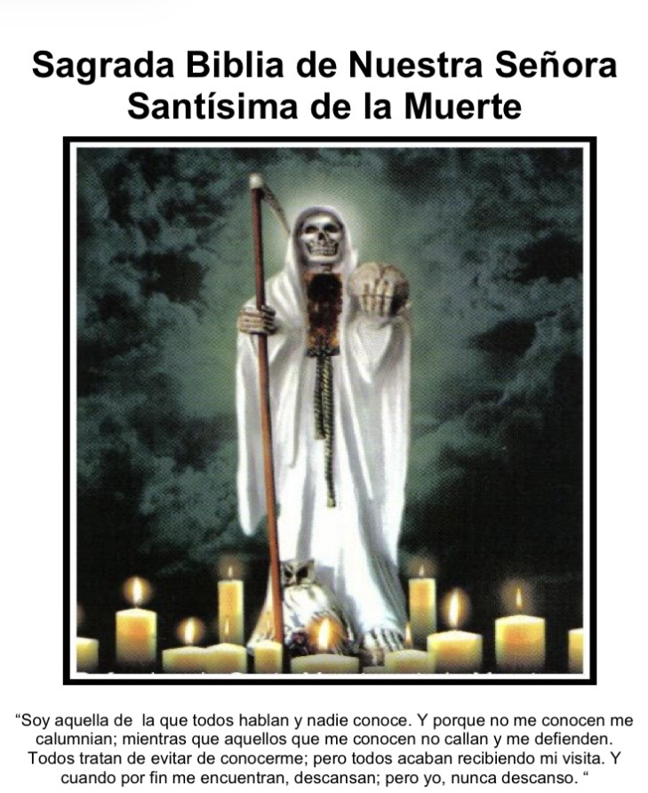

⏳ Disponible por tiempo limitado

Este libro reúne enseñanzas, oraciones y prácticas relacionadas con la devoción a la Santísima Muerte.
✔ Oraciones
✔ Devoción
✔ Protección espiritual
✔ Rituales
✔ Conocimiento tradicional
✔ Protección espiritual
✔ Fortalecer tu fe
✔ Conectar con la energía espiritual
✔ Buscar guía y equilibrio
Solo personas con respeto y devoción deben acceder.
Más de 100 personas ya accedieron